Tarea 1
Describa una situación hipotética donde tomará lugar la comunicación
Debe explicitar el quién-qué-cómo de la comunicación y describir brevemente el tipo de datos que utilizaría
Pregunta 1: Describa la situación
Reunión mensual de avance entre Sponsor de proyecto (Chile y USA) enfocado en el ciclo de ingresos de una institución de salud en el que se deben de mostrar los hallazgos y riesgos asociados a levantamientos de datos realizados para tomar decisiones en sus respectivas áreas funcionales y priorizar las mejoras que se deben implementar.
Pregunta 2: Describa el Quién
¿Quién es la audiencia? Sponsor de Proyecto: Gerente de Finanzas Chile
¿Quién es usted para la audiencia? Gerenta de Procesos y Sistemas de Consultora de Salud que lleva el proyecto ¿Lo conocen de antes? Sí, dentro de las presentación de kick off y de reuniones de levantamiento ¿Tiene alguna relación con ellos? Sí, se mantienen buenas relaciones con el fin de tener un buen aproach a ellos cuando se requiera ¿Está establecida su credibilidad? Sí.
Pregunta 3: Describa el Qué
Acción : ¿Qué necesita usted que su audiencia sepa o haga? Necesito que la audiencia sepa y comprenda la manera que se generan los datos y visualice donde están los mayores riesgos para de esta manera tomar decisiones de mejoras asociadas a los procesos/sistemas que generan dichos datos.
Mecanismo : Presentación en vivo más entregable digital que evidencia datos extraídos y analizados.
Tono : el tono a utilizar deberá ser corporativo informativo. Pregunta 4 : Describa el Cómo
¿Qué datos hay disponibles para ayudarlo a hacer el punto que quiere hacer con su comunicación? Cuentas de pacientes hospitalizados , cuentas de pacientes hospitalizados cerradas, cuentas de pacientes enviadas al asegurador, cuentas de pacientes enviadas para bonificaciones, cuentas de pacientes en que el paciente debe realizar un copago, cuentas de pacientes que se encuentran listas para facturar.
Tarea 2
Instrucciones 1 a 6
df_mini_iris <- read.csv(file = "mini_iris.csv")
df_mini_iris
Sepal.Length Sepal.Width Petal.Length Petal.Width Species
1 6.7 2.5 5.8 1.8 virginica
2 6.5 3.0 5.2 2.0 virginica
3 7.9 3.8 6.4 2.0 virginica
4 6.7 3.3 5.7 2.1 virginica
5 6.5 3.2 5.1 2.0 virginica
6 4.4 2.9 1.4 0.2 setosa
7 5.1 2.5 3.0 1.1 versicolor
8 5.1 3.8 1.9 0.4 setosa
9 6.2 2.8 4.8 1.8 virginica
10 5.4 3.9 1.3 0.4 setosadf_exibble <- read.csv(file = "datos_para_tabla.csv")
df_exibble <- df_exibble %>% select(-c(8,9))
df_exibble
num char fctr date time datetime
1 1.111e-01 apricot one 2015-01-15 13:35 2018-01-01 02:22
2 2.222e+00 banana two 2015-02-15 14:40 2018-02-02 14:33
3 3.333e+01 coconut three 2015-03-15 15:45 2018-03-03 03:44
4 4.444e+02 durian four 2015-04-15 16:50 2018-04-04 15:55
5 5.550e+03 <NA> five 2015-05-15 17:55 2018-05-05 04:00
6 NA fig six 2015-06-15 <NA> 2018-06-06 16:11
7 7.770e+05 grapefruit seven <NA> 19:10 2018-07-07 05:22
8 8.880e+06 honeydew eight 2015-08-15 20:20 <NA>
currency
1 49.950
2 17.950
3 1.390
4 65100.000
5 1325.810
6 13.255
7 NA
8 0.440df_mini_iris %>%
kbl(caption = "Tabla Mini Iris ") %>%
kable_classic(full_width = F, html_font = "Cambria")
| Sepal.Length | Sepal.Width | Petal.Length | Petal.Width | Species |
|---|---|---|---|---|
| 6.7 | 2.5 | 5.8 | 1.8 | virginica |
| 6.5 | 3.0 | 5.2 | 2.0 | virginica |
| 7.9 | 3.8 | 6.4 | 2.0 | virginica |
| 6.7 | 3.3 | 5.7 | 2.1 | virginica |
| 6.5 | 3.2 | 5.1 | 2.0 | virginica |
| 4.4 | 2.9 | 1.4 | 0.2 | setosa |
| 5.1 | 2.5 | 3.0 | 1.1 | versicolor |
| 5.1 | 3.8 | 1.9 | 0.4 | setosa |
| 6.2 | 2.8 | 4.8 | 1.8 | virginica |
| 5.4 | 3.9 | 1.3 | 0.4 | setosa |
df_exibble %>%
kbl(caption = "Tabla Exibble ") %>%
kable_classic(full_width = F, html_font = "Cambria")
| num | char | fctr | date | time | datetime | currency |
|---|---|---|---|---|---|---|
| 1.111e-01 | apricot | one | 2015-01-15 | 13:35 | 2018-01-01 02:22 | 49.950 |
| 2.222e+00 | banana | two | 2015-02-15 | 14:40 | 2018-02-02 14:33 | 17.950 |
| 3.333e+01 | coconut | three | 2015-03-15 | 15:45 | 2018-03-03 03:44 | 1.390 |
| 4.444e+02 | durian | four | 2015-04-15 | 16:50 | 2018-04-04 15:55 | 65100.000 |
| 5.550e+03 | NA | five | 2015-05-15 | 17:55 | 2018-05-05 04:00 | 1325.810 |
| NA | fig | six | 2015-06-15 | NA | 2018-06-06 16:11 | 13.255 |
| 7.770e+05 | grapefruit | seven | NA | 19:10 | 2018-07-07 05:22 | NA |
| 8.880e+06 | honeydew | eight | 2015-08-15 | 20:20 | NA | 0.440 |
df_exibble %>%
kbl (caption = "Tabla Exibble") %>%
kable_styling(bootstrap_options = "striped", font_size = 16)
| num | char | fctr | date | time | datetime | currency |
|---|---|---|---|---|---|---|
| 1.111e-01 | apricot | one | 2015-01-15 | 13:35 | 2018-01-01 02:22 | 49.950 |
| 2.222e+00 | banana | two | 2015-02-15 | 14:40 | 2018-02-02 14:33 | 17.950 |
| 3.333e+01 | coconut | three | 2015-03-15 | 15:45 | 2018-03-03 03:44 | 1.390 |
| 4.444e+02 | durian | four | 2015-04-15 | 16:50 | 2018-04-04 15:55 | 65100.000 |
| 5.550e+03 | NA | five | 2015-05-15 | 17:55 | 2018-05-05 04:00 | 1325.810 |
| NA | fig | six | 2015-06-15 | NA | 2018-06-06 16:11 | 13.255 |
| 7.770e+05 | grapefruit | seven | NA | 19:10 | 2018-07-07 05:22 | NA |
| 8.880e+06 | honeydew | eight | 2015-08-15 | 20:20 | NA | 0.440 |
df_mini_iris %>%
kbl (caption = "Tabla mini iris") %>%
kable_styling(font_size = 16)
| Sepal.Length | Sepal.Width | Petal.Length | Petal.Width | Species |
|---|---|---|---|---|
| 6.7 | 2.5 | 5.8 | 1.8 | virginica |
| 6.5 | 3.0 | 5.2 | 2.0 | virginica |
| 7.9 | 3.8 | 6.4 | 2.0 | virginica |
| 6.7 | 3.3 | 5.7 | 2.1 | virginica |
| 6.5 | 3.2 | 5.1 | 2.0 | virginica |
| 4.4 | 2.9 | 1.4 | 0.2 | setosa |
| 5.1 | 2.5 | 3.0 | 1.1 | versicolor |
| 5.1 | 3.8 | 1.9 | 0.4 | setosa |
| 6.2 | 2.8 | 4.8 | 1.8 | virginica |
| 5.4 | 3.9 | 1.3 | 0.4 | setosa |
Instrucción 7
Numeros color blanco , y fondo que va cambiando celda a celda
dt <- df_mini_iris df_mini_irisdf_mini_iris %>%
kbl() %>%
kable_paper(full_width = F) %>%
column_spec(1, color = "white",
background = spec_color(mtcars$drat[1:8], end = 0.7))
| Sepal.Length | Sepal.Width | Petal.Length | Petal.Width | Species |
|---|---|---|---|---|
| 6.7 | 2.5 | 5.8 | 1.8 | virginica |
| 6.5 | 3.0 | 5.2 | 2.0 | virginica |
| 7.9 | 3.8 | 6.4 | 2.0 | virginica |
| 6.7 | 3.3 | 5.7 | 2.1 | virginica |
| 6.5 | 3.2 | 5.1 | 2.0 | virginica |
| 4.4 | 2.9 | 1.4 | 0.2 | setosa |
| 5.1 | 2.5 | 3.0 | 1.1 | versicolor |
| 5.1 | 3.8 | 1.9 | 0.4 | setosa |
| 6.2 | 2.8 | 4.8 | 1.8 | virginica |
| 5.4 | 3.9 | 1.3 | 0.4 | setosa |
Numeros color blanco, fondo gris
df_mini_iris %>%
kbl() %>%
kable_paper(full_width = F) %>%
column_spec(1, color = "white",
background = "grey")
| Sepal.Length | Sepal.Width | Petal.Length | Petal.Width | Species |
|---|---|---|---|---|
| 6.7 | 2.5 | 5.8 | 1.8 | virginica |
| 6.5 | 3.0 | 5.2 | 2.0 | virginica |
| 7.9 | 3.8 | 6.4 | 2.0 | virginica |
| 6.7 | 3.3 | 5.7 | 2.1 | virginica |
| 6.5 | 3.2 | 5.1 | 2.0 | virginica |
| 4.4 | 2.9 | 1.4 | 0.2 | setosa |
| 5.1 | 2.5 | 3.0 | 1.1 | versicolor |
| 5.1 | 3.8 | 1.9 | 0.4 | setosa |
| 6.2 | 2.8 | 4.8 | 1.8 | virginica |
| 5.4 | 3.9 | 1.3 | 0.4 | setosa |
numeros color blanco fondo gris con df_exibble
df_exibble %>%
kbl() %>%
kable_paper(full_width = F) %>%
column_spec(7, color = "white",
background = "grey")
| num | char | fctr | date | time | datetime | currency |
|---|---|---|---|---|---|---|
| 1.111e-01 | apricot | one | 2015-01-15 | 13:35 | 2018-01-01 02:22 | 49.950 |
| 2.222e+00 | banana | two | 2015-02-15 | 14:40 | 2018-02-02 14:33 | 17.950 |
| 3.333e+01 | coconut | three | 2015-03-15 | 15:45 | 2018-03-03 03:44 | 1.390 |
| 4.444e+02 | durian | four | 2015-04-15 | 16:50 | 2018-04-04 15:55 | 65100.000 |
| 5.550e+03 | NA | five | 2015-05-15 | 17:55 | 2018-05-05 04:00 | 1325.810 |
| NA | fig | six | 2015-06-15 | NA | 2018-06-06 16:11 | 13.255 |
| 7.770e+05 | grapefruit | seven | NA | 19:10 | 2018-07-07 05:22 | NA |
| 8.880e+06 | honeydew | eight | 2015-08-15 | 20:20 | NA | 0.440 |
df_mini_iris con Sepal.Lenght fondo condicional
df_mini_iris %>%
kbl() %>%
kable_paper(full_width = F) %>%
column_spec(1, color = "white",
background = ifelse(df_mini_iris$Sepal.Length < 6, "orange", "white"))
| Sepal.Length | Sepal.Width | Petal.Length | Petal.Width | Species |
|---|---|---|---|---|
| 6.7 | 2.5 | 5.8 | 1.8 | virginica |
| 6.5 | 3.0 | 5.2 | 2.0 | virginica |
| 7.9 | 3.8 | 6.4 | 2.0 | virginica |
| 6.7 | 3.3 | 5.7 | 2.1 | virginica |
| 6.5 | 3.2 | 5.1 | 2.0 | virginica |
| 4.4 | 2.9 | 1.4 | 0.2 | setosa |
| 5.1 | 2.5 | 3.0 | 1.1 | versicolor |
| 5.1 | 3.8 | 1.9 | 0.4 | setosa |
| 6.2 | 2.8 | 4.8 | 1.8 | virginica |
| 5.4 | 3.9 | 1.3 | 0.4 | setosa |
crear tabla con dos notas al pie de la tabla
kable(df_mini_iris, "html") %>%
kable_styling("striped") %>%
add_footnote(c("Esta tarea esta díficil", "Pero no imposible."), notation = "alphabet")
| Sepal.Length | Sepal.Width | Petal.Length | Petal.Width | Species |
|---|---|---|---|---|
| 6.7 | 2.5 | 5.8 | 1.8 | virginica |
| 6.5 | 3.0 | 5.2 | 2.0 | virginica |
| 7.9 | 3.8 | 6.4 | 2.0 | virginica |
| 6.7 | 3.3 | 5.7 | 2.1 | virginica |
| 6.5 | 3.2 | 5.1 | 2.0 | virginica |
| 4.4 | 2.9 | 1.4 | 0.2 | setosa |
| 5.1 | 2.5 | 3.0 | 1.1 | versicolor |
| 5.1 | 3.8 | 1.9 | 0.4 | setosa |
| 6.2 | 2.8 | 4.8 | 1.8 | virginica |
| 5.4 | 3.9 | 1.3 | 0.4 | setosa |
| a Esta tarea esta díficil | ||||
| b Pero no imposible. |
tabla df_exibble donde currency tenga numeros blanco color lightblue
dt2 <- df_exibble df_exibble
df_exibble %>%
kbl() %>%
kable_paper(full_width = F) %>%
column_spec(7, color = "white",
background = "lightblue")
| num | char | fctr | date | time | datetime | currency |
|---|---|---|---|---|---|---|
| 1.111e-01 | apricot | one | 2015-01-15 | 13:35 | 2018-01-01 02:22 | 49.950 |
| 2.222e+00 | banana | two | 2015-02-15 | 14:40 | 2018-02-02 14:33 | 17.950 |
| 3.333e+01 | coconut | three | 2015-03-15 | 15:45 | 2018-03-03 03:44 | 1.390 |
| 4.444e+02 | durian | four | 2015-04-15 | 16:50 | 2018-04-04 15:55 | 65100.000 |
| 5.550e+03 | NA | five | 2015-05-15 | 17:55 | 2018-05-05 04:00 | 1325.810 |
| NA | fig | six | 2015-06-15 | NA | 2018-06-06 16:11 | 13.255 |
| 7.770e+05 | grapefruit | seven | NA | 19:10 | 2018-07-07 05:22 | NA |
| 8.880e+06 | honeydew | eight | 2015-08-15 | 20:20 | NA | 0.440 |
PASO 3
df_exibble %>%
gt() %>%
fmt_number(
columns = 7,
decimals = 1
) %>%
fmt_currency(
columns = 7,
currency = "USD"
)
| num | char | fctr | date | time | datetime | currency |
|---|---|---|---|---|---|---|
| 1.111e-01 | apricot | one | 2015-01-15 | 13:35 | 2018-01-01 02:22 | $49.95 |
| 2.222e+00 | banana | two | 2015-02-15 | 14:40 | 2018-02-02 14:33 | $17.95 |
| 3.333e+01 | coconut | three | 2015-03-15 | 15:45 | 2018-03-03 03:44 | $1.39 |
| 4.444e+02 | durian | four | 2015-04-15 | 16:50 | 2018-04-04 15:55 | $65,100.00 |
| 5.550e+03 | NA | five | 2015-05-15 | 17:55 | 2018-05-05 04:00 | $1,325.81 |
| NA | fig | six | 2015-06-15 | NA | 2018-06-06 16:11 | $13.26 |
| 7.770e+05 | grapefruit | seven | NA | 19:10 | 2018-07-07 05:22 | NA |
| 8.880e+06 | honeydew | eight | 2015-08-15 | 20:20 | NA | $0.44 |
Paso 4
df_mini_iris <- read.csv(file = "mini_iris.csv")
df_mini_iris
Sepal.Length Sepal.Width Petal.Length Petal.Width Species
1 6.7 2.5 5.8 1.8 virginica
2 6.5 3.0 5.2 2.0 virginica
3 7.9 3.8 6.4 2.0 virginica
4 6.7 3.3 5.7 2.1 virginica
5 6.5 3.2 5.1 2.0 virginica
6 4.4 2.9 1.4 0.2 setosa
7 5.1 2.5 3.0 1.1 versicolor
8 5.1 3.8 1.9 0.4 setosa
9 6.2 2.8 4.8 1.8 virginica
10 5.4 3.9 1.3 0.4 setosaft <- flextable(df_mini_iris)
set_flextable_defaults(
font.size = 10, theme_fun = theme_vanilla,
padding = 6,
background.color = "#EFEFEF"
)
flextable(df_mini_iris)
Sepal.Length | Sepal.Width | Petal.Length | Petal.Width | Species |
6.7 | 2.5 | 5.8 | 1.8 | virginica |
6.5 | 3.0 | 5.2 | 2.0 | virginica |
7.9 | 3.8 | 6.4 | 2.0 | virginica |
6.7 | 3.3 | 5.7 | 2.1 | virginica |
6.5 | 3.2 | 5.1 | 2.0 | virginica |
4.4 | 2.9 | 1.4 | 0.2 | setosa |
5.1 | 2.5 | 3.0 | 1.1 | versicolor |
5.1 | 3.8 | 1.9 | 0.4 | setosa |
6.2 | 2.8 | 4.8 | 1.8 | virginica |
5.4 | 3.9 | 1.3 | 0.4 | setosa |
Tarea 3
Tutorial Gráficos puntos y barras.
En este tutorial les mostraremos el paso a paso para crear gráficos de puntos y barras utilizando el paquete ggplot
Lo primero que debemos hacer es cargar los siguientes paquetes:
Crear gráficos con distintas geometrías
Ahora, crearemos dos gráficos , uno con gemetría de barras y otro de puntos. Para ello utilizaremos el paquete penguins.
barras1 <- ggplot(penguins, aes(y = island, fill = species)) +
geom_bar() +
labs(title = "Pingüinos en archipiélago de Palmer",
subtitle = "Número de pinguinos en cada isla")
print(barras1)
puntos1 <- ggplot(penguins, aes(x = bill_length_mm, y = bill_depth_mm,
color = species)) +
geom_point() +
labs(title = "Pingüinos en archipiélago de Palmer",
subtitle = "Dimensiones del pico de diversas especies")
print(puntos1)
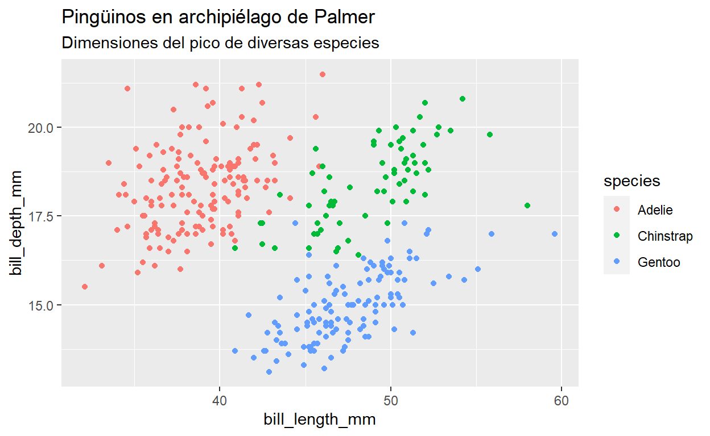
Cambiar paleta de colores de los gráficos creados
Para customizar los colores de nuestros gráficos, debemos seleccionar la conexión de colores que deseemos aplicar a nuestro gráfico, para este ejercicio seleccionamos la paleta bigsur2 que está en el paquete calecopal.
paletteer_d("calecopal::bigsur2")
<colors>
#20618DFF #91AAC4FF #6B6C58FF #464724FF #83932DFF #CAB89FFF Luego , asignamos el vector col_d_1 a los colores de la paleta bigsur2
col_d_1 <- c("#20618DFF", "#91AAC4FF", "#6B6C58FF", "#464724FF",
"#83932DFF", "#CAB89FFF")
Dentro del paquete ggplot está la función scale_fill y scale_color que nos permite cambiar manualmente fill o color. Para nuestro ejercicio , colocaremos dentro del argumento values de la funcion scale_fill y scale_color el vector creado en el paso anterior.
barras1 + scale_fill_manual(values = col_d_1)
puntos1 + scale_color_manual(values = col_d_1)
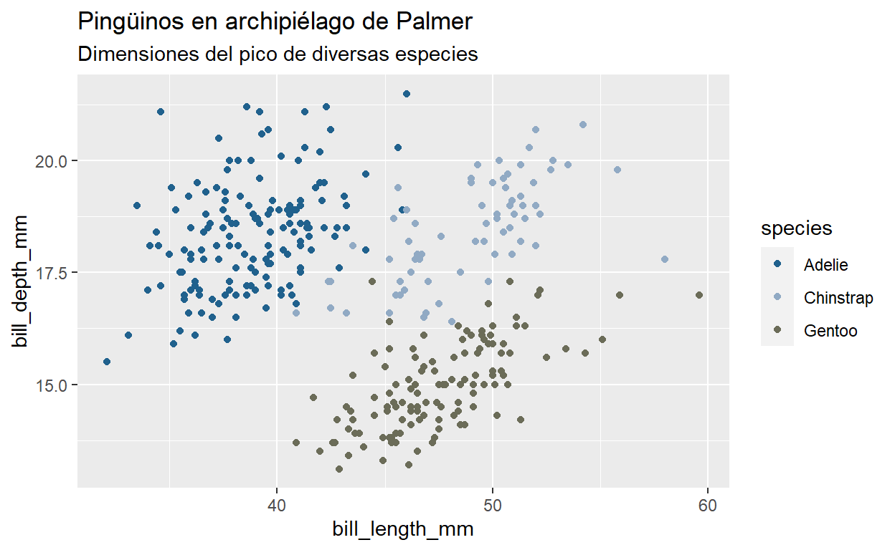
Lo explicado anteriormente puede simplificarse creando un objeto con la función y argumento fill y color
mi_fill_1 <- scale_fill_manual(values = col_d_1)
mi_color_1 <- scale_color_manual(values = col_d_1)
Y luego podemos asignarlo al gráfico en que se desee aplicar.
barras1 + mi_fill_1

puntos1 + mi_color_1

Ahora hagamos unos ejercicios
Ejercicio 1
Usaremos el mismo método anterior para crear una paleta discreta para el aesthetic fill y otra para color que sean de su agrado. Puede usar cualquier fuente para encontrar sus colores, en este ejercicio utilizaremos esta url https://emilhvitfeldt.github.io/r-color-palettes/discrete.html y seleccionamos la siguiente paleta.
paletteer_d("beyonce::X18")
<colors>
#424395FF #018AC4FF #5EC2DAFF #EBC915FF #EB549AFF #550133FF Recordemos que el primer paso es asignar los colores de la paleta seccionada a un vector, que en este caso lo llamaremos color_ej_3. Anteriormente la asignación fue manual, pero podemos simplificar este paso con la función as.vector de la siguiente manera:
Paleta_ej_1 <- as.vector(paletteer_d("beyonce::X18"))
Ahora , crearemos 2 objetos para asociar el uso de las paletas.
Fill_Ej_1 <- scale_fill_manual(values = Paleta_ej_1)
Color_Ej_1 <- scale_color_manual(values = Paleta_ej_1)
Y por último asociamos estos objetos a nuestros gráficos para cambiar el color
barras1 + Fill_Ej_1
puntos1 + Color_Ej_1
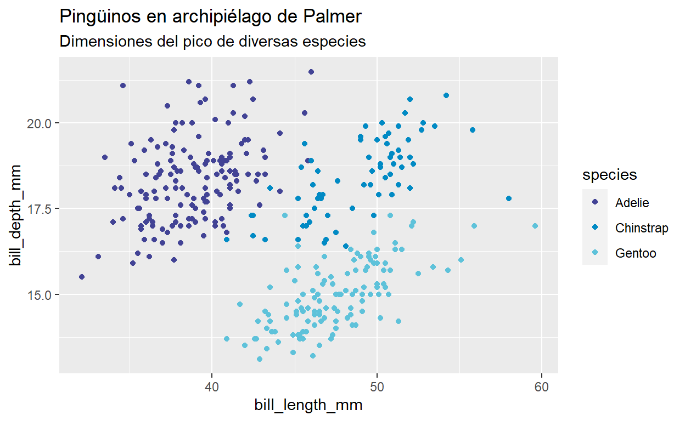
Ejercicio 2 :
En este ejercicio probaremos 10 paletas distintas, 5 para el gráfico barras1 y 5 para el gráfico puntos1. En esta ocasión , utilizaremos las funciones scale_color_paletteer_d() o scale_fill_paletteer_d("") según corresponda.
Gráficos de Barra
En barras1utilizaremos la funciónscale_fill_paletteer_d("") y le aplicaremos la paleta colorblindr::OkabeIto
barras1 + scale_fill_paletteer_d("colorblindr::OkabeIto")
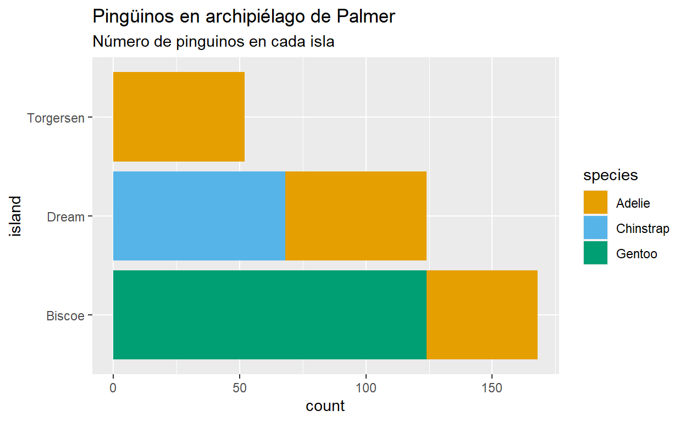
Lo anterior lo repetiremos con estas 4 paletas
colRoz::k_tristis
fishualize::Acanthurus_sohal
fishualize::Cirrhilabrus_tonozukai
fishualize::Scarus_zelindae
barras1 + scale_fill_paletteer_d("colRoz::k_tristis")
barras1 + scale_fill_paletteer_d("fishualize::Acanthurus_sohal")
barras1 + scale_fill_paletteer_d("fishualize::Cirrhilabrus_tonozukai")
barras1 + scale_fill_paletteer_d("fishualize::Scarus_zelindae")
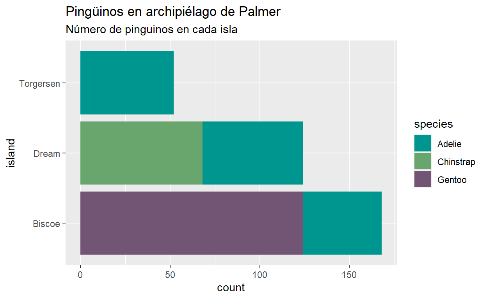
Gráficos de puntos
En puntos1utilizaremos la funciónscale_color_paletteer_d("") y le aplicaremos la paleta basetheme::ink
puntos1 + scale_color_paletteer_d("basetheme::ink")
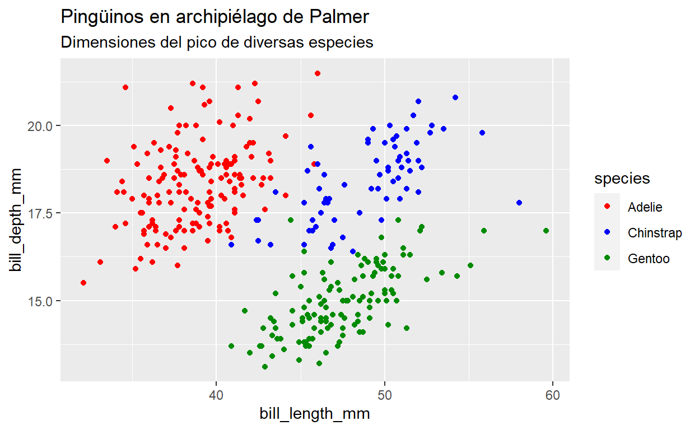
Lo anterior lo repetiremos con estas 4 paletas
- palettetown::spearow
- yarrr::appletv
- RColorBrewer::Set1
- basetheme::clean
puntos1 + scale_color_paletteer_d("palettetown::spearow")
puntos1 + scale_color_paletteer_d("yarrr::appletv")
puntos1 + scale_color_paletteer_d("RColorBrewer::Set1")
puntos1 + scale_color_paletteer_d("basetheme::clean")
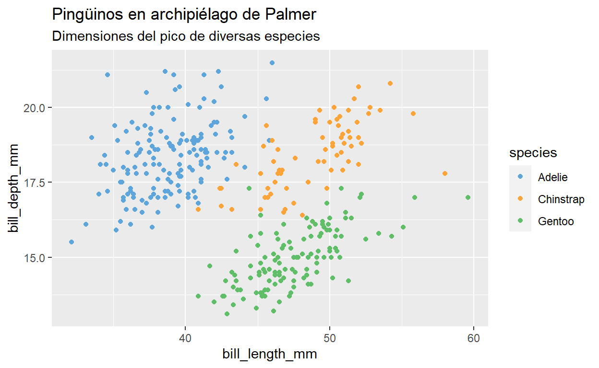
Ejercicio 3
En este ejercicio aprenderemos a cambiar el tamaño de fuente del título y subtítulo.
Utilizaremos
plot.titlepara modificar el tamaño del título yplot.subtitlepara modificar el tamaño del subtítulo.
Para nuesto gráfico de puntos quedaría de la siguiente manera:
puntos1 + theme(
plot.title = element_text(size = 20),
plot.subtitle = element_text(size = 8))
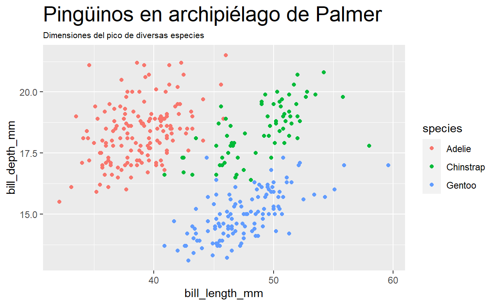
Y para nuestro gráfico de barras:
barras1 + theme(
plot.title = element_text(size = 20),
plot.subtitle = element_text(size = 8))
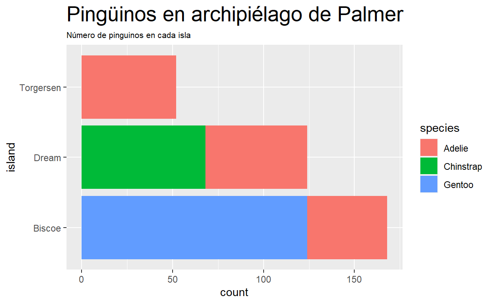
Ejercicio 4
Ahora cambiaremos el color de nuestro subtítulo reemplazando color="grey40"por royalblue
puntos1 + theme(
plot.title = element_text(size = 20),
plot.subtitle = element_text(size = 8, color = "royalblue ")
)
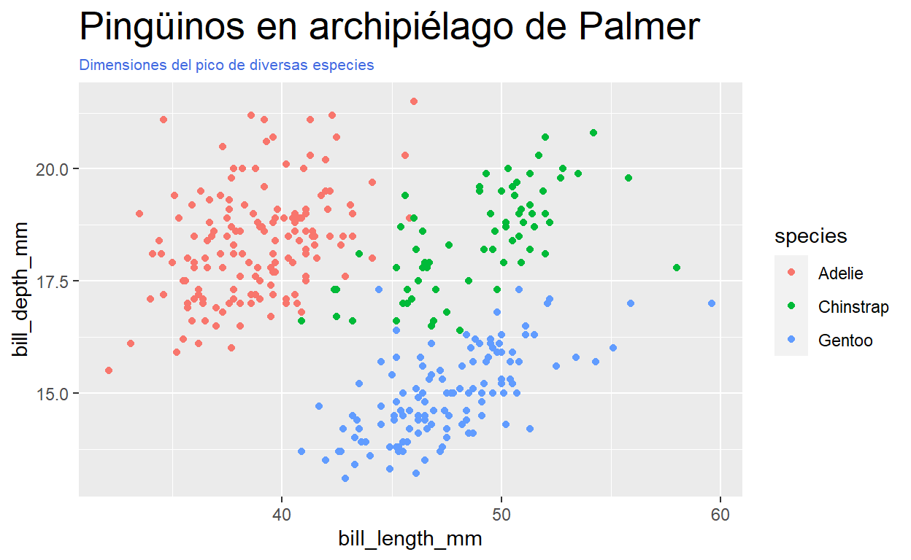
Ejercicio 5
Haremos 2 cambios a nuestro gráfico de puntos (también puede utilizarse en el de barras). El pimero será sacarle grillas menores y menores. Para ello ocuparemos las siguiente funciones:
puntos1 + theme(panel.grid.major = element_blank(),
panel.grid.minor= element_blank())
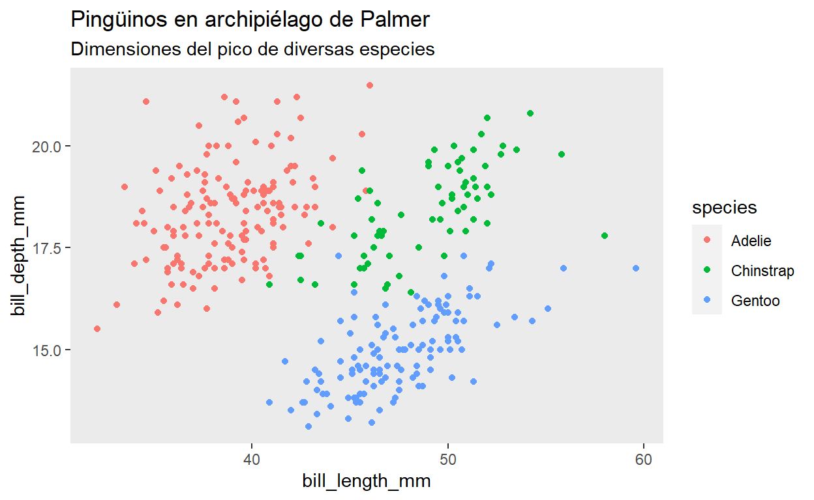
Ahora eliminaremos el color del background del gráfico, agregando al código anterior panel.background = element_blank() quedando así:
puntos1 + theme(panel.grid.major = element_blank(),
panel.grid.minor= element_blank(),
panel.background = element_blank())
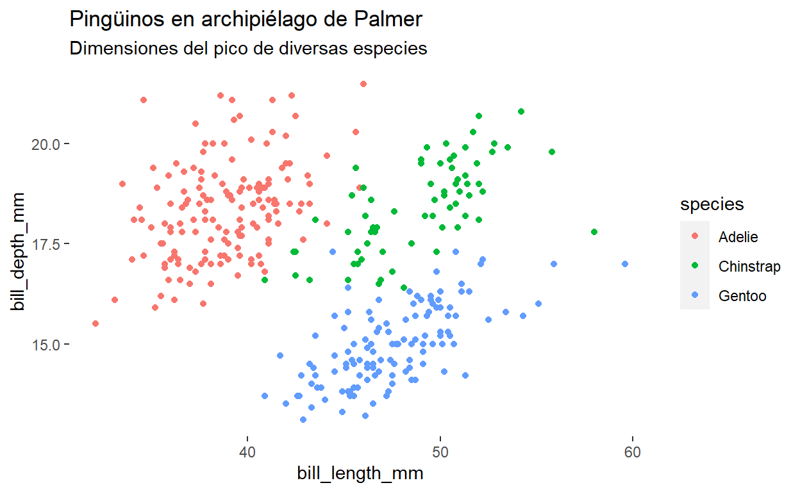
Por último , agregaremos los cambios del Ejercicio 4 correspondientes a los tamaños y colores de título y subtítulo.
puntos1 + theme(panel.grid.major = element_blank(),
panel.grid.minor= element_blank(),
panel.background = element_blank(),
plot.title = element_text(size = 20),
plot.subtitle = element_text(size = 8, color = "royalblue "))
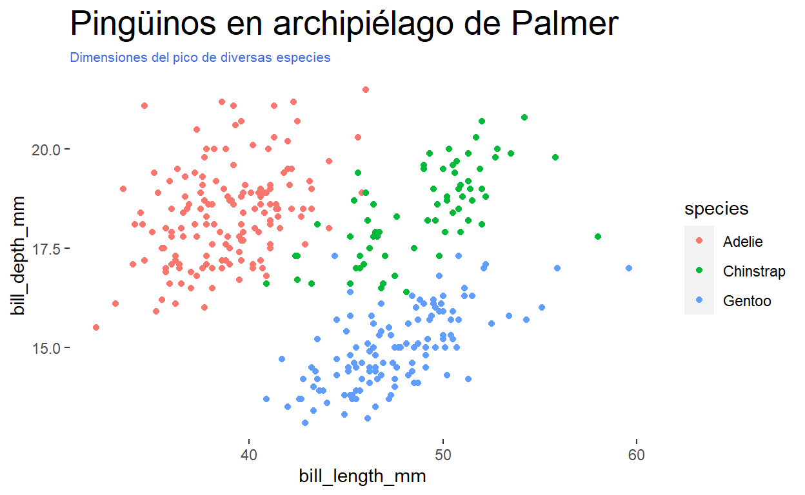
Ejercicio 6
Guardaremos todos los cambios de los ejercicios 3,4,5 en un objeto que denominaremos mis_cambios_de_tema
mis_cambios_de_tema <- theme(panel.grid.major = element_blank(),
panel.grid.minor= element_blank(),
panel.background = element_blank(),
plot.title = element_text(size = 20),
plot.subtitle = element_text(size = 8, color = "royalblue "))
Ahora aplicaremos estos cambios a ambos gráficos.
Para el Gráfico de puntos :
puntos1 + mis_cambios_de_tema
Para el Gráfico de barras:
barras1 + mis_cambios_de_tema
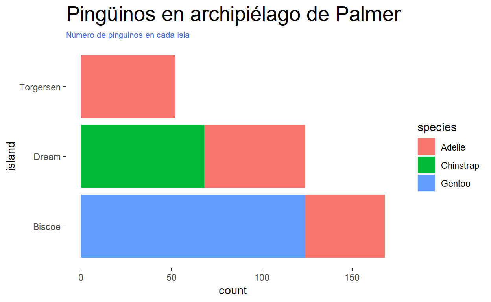
Ejercicio 7
Cambiaremos el color de los gráficos utilizando las paletas del Ejercicio 1 que guardamos en los objetos Color_Ej_1y Fill_Ej_1 Para poder aplicar esto, agregamos al código del Ejercicio 6 + Color_Ej_1 o Fill_Ej_1 según el gráfico que corresponda.
Para el Gráfico de puntos:
puntos1 + mis_cambios_de_tema + Color_Ej_1
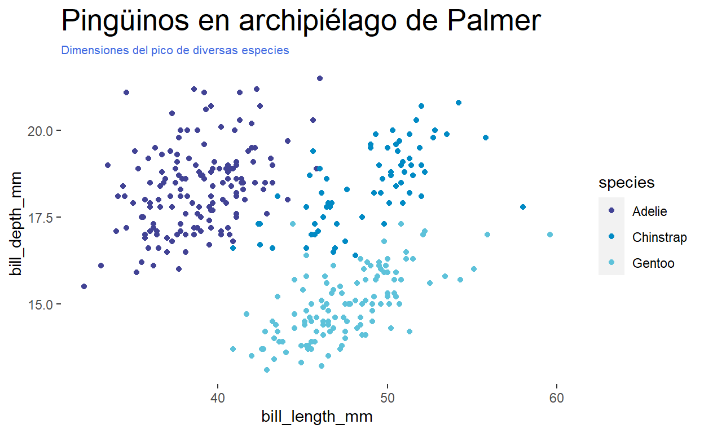
Para el Gráfico de barras:
barras1 + mis_cambios_de_tema + Fill_Ej_1
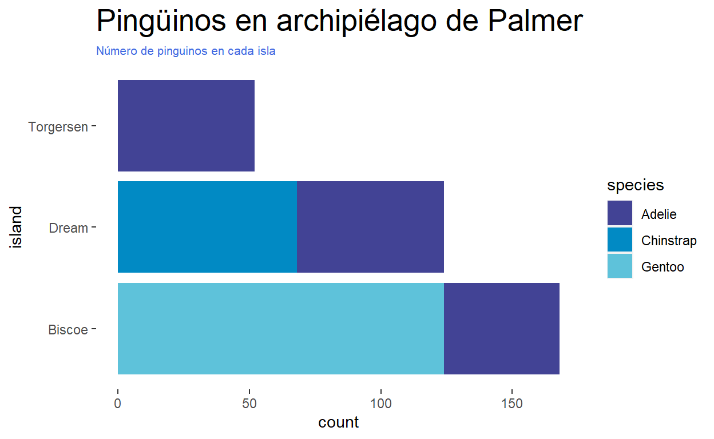
Ejercicio 8
Veremos cómo podemos guardar las paletas utilizadas y cambios de tema. Para ello crearemos un nuevo archivo R al cuál denominaremos cambios_graficos. En este archivo colocaremos las funciones escenciales utilizadas durante este tutorial. Primero , colocaremos dentro del archivo la llamada a la librería tidyverse la cual es la princial utilizada para el desarrollo de este tutorial.
Luego colocaremos lo ejecutado en el Ejercicio 1 en cuanto a la creación de paletas.
col_d_1 <- c("#20618DFF", "#91AAC4FF", "#6B6C58FF", "#464724FF",
"#83932DFF", "#CAB89FFF")
mi_fill_1 <- scale_fill_manual(values = col_d_1)
mi_color_1 <- scale_color_manual(values = col_d_1)
Por último agregaremos lo relativo a la creacion de temas del Ejercicio 7
mis_cambios_de_tema <- theme(panel.grid.major = element_blank(),
panel.grid.minor= element_blank(),
panel.background = element_blank(),
plot.title = element_text(size = 20),
plot.subtitle = element_text(size = 8, color = "royalblue "))
Con este archivo , cada vez que necesitos utilizar la gráfica de creada en este tutorial deberemos agregar, en el script que necesitemos invocar el tema, lo siguiente:
source("cambios_graficos.R")
De esta manera, cada vez que se invoque el archivo cambios_gráficos.R, aplicará el cambio de tema creado durante este tutorial y creará los objetos necesarios, tal como muestra la imagen en el archivo practica .

Tarea 4
Proyecto integrador
Aquí va el proyecto integrador